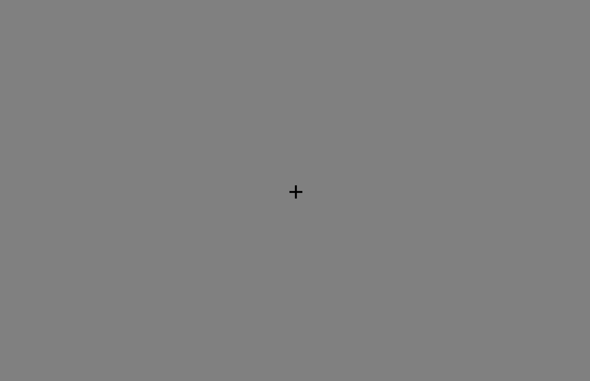
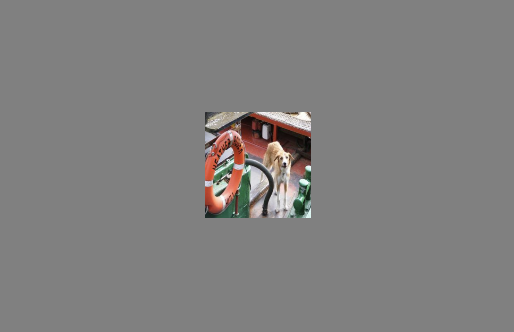
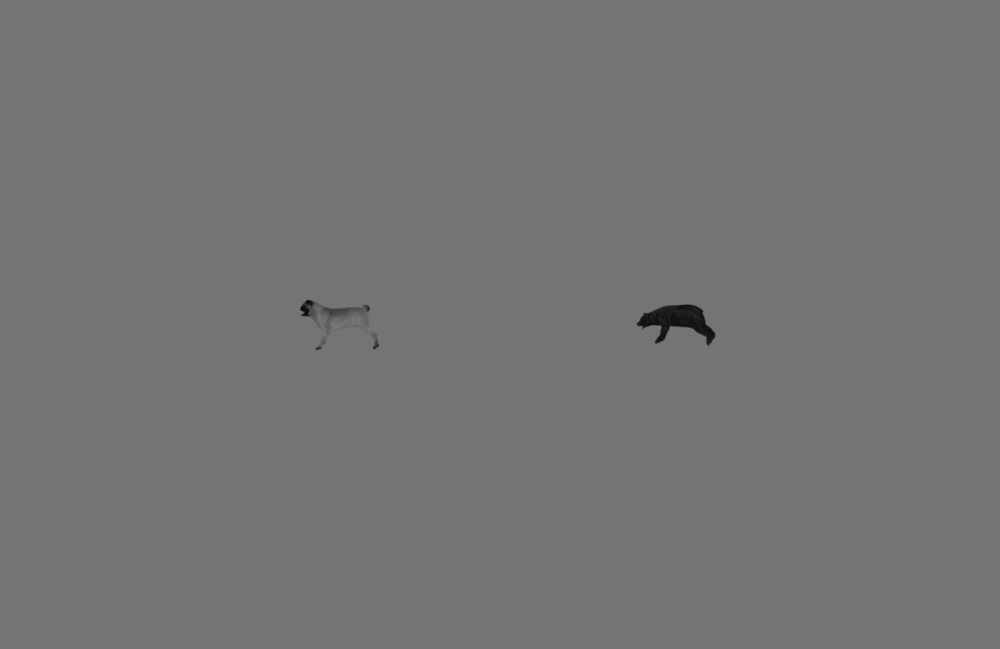
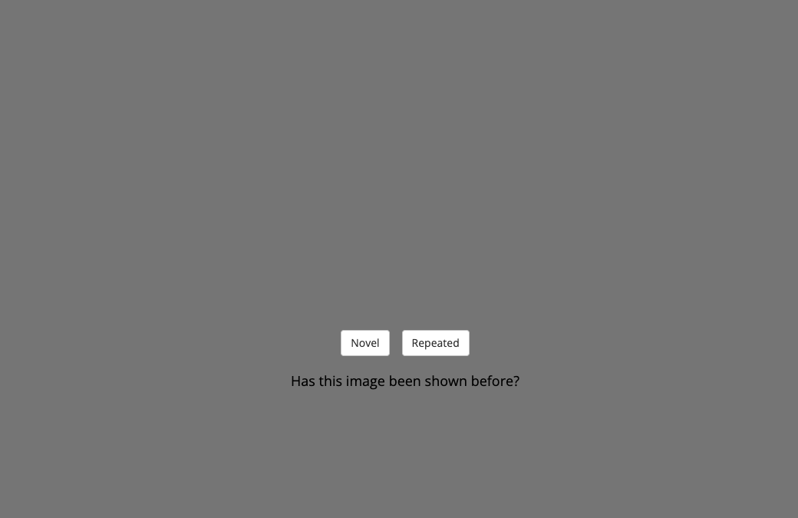
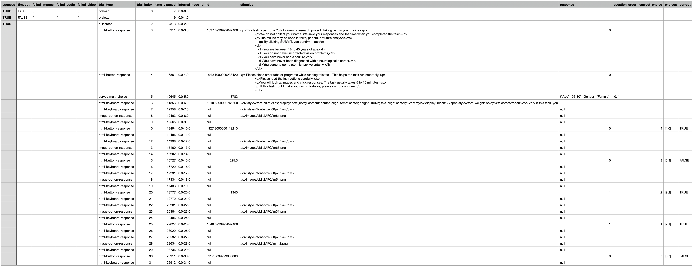
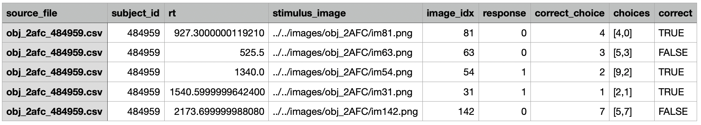

Psychophysics notebooks
Use these launch buttons to open the original notebooks in Google Colab. The tutorial content below is unchanged.
manipulate_stimuli.ipynbpsychophysics/extract_2afc_results.ipynbpsychophysics/extract_ratings.ipynbpsychophysics/extract_n_back_results.ipynbpsychophysics/make_2afc_html_lines.ipynbpsychophysics/make_ratings_html_lines.ipynbpsychophysics/make_n_back_html_lines.ipynbWhat is this tutorial?
This tutorial explains the experiment files in simple words.
You do not need to understand every line of code. Start by learning the screens that make one trial, then learn which small parts you should edit.
Task paradigms
2AFC
2AFC means two-alternative forced choice.
The participant sees one image and chooses between two answers.
Use this for object recognition or drawing recognition.
obj_recog.html, draw_recog.htmlN-Back
The participant sees images one at a time.
They answer whether each image is new or repeated.
memorability.htmlWhat happens in one trial?
A trial is one small part of the experiment. In most tasks, one trial shows one image and asks for one response.
Most tasks repeat this same trial many times, once for each image.
The four main screens
1. Fixation screen
A plus sign appears in the middle of the screen. This tells the participant where to look before the image appears.
Common time: 500 ms2. Image screen
The image is shown. In many tasks, it is shown briefly so the participant cannot look at it for too long.
Common time: 100–200 ms3. Blank screen
Nothing appears for a short time. This separates the image from the response screen.
Common time: 100 ms4. Response screen
The participant answers. They may click one of two choices, move a slider, or say whether an image is novel or repeated.
Common time: 3000–8000 msHow to make the starting screens
Before the real trials start, the experiment usually adds setup screens to the timeline.
let timeline = [];
timeline.push(preload); // load images before the task starts
timeline.push(fullscreen); // ask the participant to enter fullscreen
timeline.push(consent_form); // show consent information
timeline.push(intro_info); // show basic information
timeline.push(survey); // ask participant questions
timeline.push(welcome); // show task instructionsWhat can I change?
- the instruction text in
welcome.
How to make a fixation screen
timeline.push({
type: 'html-keyboard-response',
stimulus: '<div style="font-size: 60px;">+</div>',
choices: jsPsych.NO_KEYS,
trial_duration: 500
});This screen shows a plus sign. The participant cannot answer during this screen.

What can I change?
+: change the fixation symbol.font-size: 60px: make the fixation bigger or smaller.trial_duration: 500: change how long the screen stays on. Time is in milliseconds. 500 ms = half a second.
How to make an image screen
timeline.push({
type: 'image-button-response',
stimulus: images[i],
stimulus_height: stimulusSize,
choices: [],
trial_duration: 100,
data: { trial_index: i }
});This screen shows one image from your image list. In 2AFC tasks, the participant sees the image first and answers later.

What can I change?
images[i]: this means “show the current image.” Usually, do not change this line. Change the image list instead.stimulus_height: stimulusSize: controls the image size. ChangestimulusSizeorvisualAngleif you want bigger or smaller images.choices: []: means no response buttons on this screen.trial_duration: 100: image time. 100 ms = one tenth of a second.
How to make a blank screen
timeline.push({
type: 'html-keyboard-response',
stimulus: '',
choices: jsPsych.NO_KEYS,
trial_duration: 100
});This screen shows nothing. It creates a short pause after the image.
What can I change?
stimulus: '': empty means the screen is blank.trial_duration: 100: blank time. Increase it for a longer pause.
How to make response screens
Different task paradigms use different response screens.
2AFC response

The participant clicks the left or right answer.
timeline.push({
type: 'html-button-response',
stimulus: '',
button_html: [lb1, lb2],
choices: ['left', 'right'],
trial_duration: 3000
});Change: lb1 and lb2 to change the labels/images shown as answers. Change trial_duration to give more or less time to answer.
N-Back response

The participant says whether the image is new or has appeared before.
timeline.push({
type: 'image-button-response',
stimulus: images[i],
stimulus_height: stimulusSize,
choices: ['Novel', 'Repeated'],
prompt: '<p>Has this image been shown before?</p>',
trial_duration: 3000,
stimulus_duration: 200
});Change: choices to change button text, prompt to change the question, stimulus_duration to change image time, and trial_duration to change total answer time.
Important timing words
| Code word | Meaning | Example |
|---|---|---|
trial_duration | How long the whole screen lasts. | trial_duration: 3000 means 3 seconds. |
stimulus_duration | How long the image itself is visible during a response screen. | stimulus_duration: 200 means the image disappears after 200 ms. |
choices: jsPsych.NO_KEYS | The participant cannot press keys to answer. | Used for fixation and blank screens. |
choices: [] | No response buttons are shown. | Used when the image is shown before the answer screen. |
The most important section to edit
Open a task file and look for this line:
// ===== STUDENTS: EDIT THIS SECTION =====This section tells the task which images to show and, when needed, which answer is correct.
What can I change?
| What you want to change | Where to look | What to edit |
|---|---|---|
| Images shown in the task | // STUDENTS: EDIT THIS SECTION | val |
| Image folder | near the image list | imageFolder or image path text |
| Create altered image versions | manipulate_stimuli.ipynb | Use it to make blurred, noisy, brighter, or contrast-changed images |
| Correct answer in 2AFC | obj_2afc.html or draw_2afc.html | correct_choice |
| Left and right answers in 2AFC | obj_2afc.html or draw_2afc.html | ch1 and ch2 |
| Novel/repeated answer in N-Back | n_back.html | correct |
| Timing of a screen | inside each screen object | trial_duration or stimulus_duration |
| Rating scale | ratings.html | min, max, step, and labels |
| Instruction text | welcome/instruction screens | text inside stimulus or prompt |
How to change images in a 2AFC task
Example from obj_recog.html:
let val = [81, 63, 54, 31, 142];
let ch1 = [4, 5, 9, 2, 5];
let ch2 = [0, 3, 2, 1, 7];
let correct_choice = [4, 3, 2, 1, 7];Read this as:
val= the image indices shown to the participant.ch1= the answer shown on the left.ch2= the answer shown on the right.correct_choice= the correct answer for each image.
Example: test your own 2AFC images
Put your images in:
images/your_experiment_name/Name them like this:
im0.png
im1.png
im2.pngThen change the image list:
let val = [0, 1, 2];The task will now show im0.png, im1.png, and im2.png.
How to change images in a Rating task
Example from ratings.html:
let val = [7, 2, 15, 0, 18];This means the task shows:
im7.jpg
im2.jpg
im15.jpg
im0.jpg
im18.jpgTo test your own images, put them in:
images/your_experiment_name/Then change val to your image numbers.
How to change images in an N-Back task
Example from n_back.html:
var val = [161, 161, 115];
var correct = [0, 1, 0];Read this as:
- The first image is
im161.png. It is new, so the correct answer is0. - The second image is also
im161.png. It is repeated, so the correct answer is1. - The third image is
im115.png. It is new, so the correct answer is0.
0 means Novel. 1 means Repeated.How to use your own images
To test your own images, we suggest using around 20 images. This is enough to try the task without making the experiment too long.
There are three steps:
- Step 1: save your images in an image folder.
- Step 2: choose the task paradigm: 2AFC, Rating, or N-Back.
- Step 3: create a small metadata CSV file that describes the images.
Step 1: save your images
Put your images in a folder inside the images folder.
For example:
images/my_experiment/Name your images with numbers:
im0.png
im1.png
im2.png
im3.png
...
The number in the file name is the image index.
For example, im7.png has image index 7.
Step 2: choose your task paradigm
| Task paradigm | What the participant does | What the metadata needs |
|---|---|---|
| 2AFC | Choose between two answers. | Image file, image index, correct answer. |
| Rating | Move a slider to give a rating. | Image file and image index. |
| N-Back | Say whether the image is novel or repeated. | Image file, image index, correct answer. |
Step 3: create a metadata CSV file
A metadata CSV file is a small table that describes your images.
You can make it in Excel, Google Sheets, or Python.
Then save it as a .csv file.
Example metadata file for 2AFC
Use this format if the participant must choose between two answers. For 2AFC, you only need to provide the correct answer. The script will automatically create the left and right choices.
The answer numbers can come from this class list:
lb = ['bear','elephant','person','car','dog','apple','chair','plane','bird','zebra']
The first class has index 0, the second class has index 1, and so on:
image_file,image_idx,correct_choice
im0.png,0,4
im1.png,1,3
im2.png,2,6
im3.png,3,9Read this as:
im0.pngshows image0. The correct answer is4, which means dog.im1.pngshows image1. The correct answer is3, which means car.im2.pngshows image2. The correct answer is6, which means chair.im3.pngshows image3. The correct answer is9, which means zebra.
correct_choice to create the two response options.
One option will be the correct class. The other option will be a wrong class chosen from the same class list.
Example metadata file for Rating
Use this format if the participant gives a rating. There is no correct answer.
image_file,image_idx
im0.png,0
im1.png,1
im2.png,2
im3.png,3Example metadata file for N-Back
Use this format if the participant answers Novel or Repeated. For N-Back, you only need to say which images should be repeated. The script will create the final task order.
image_file,image_idx,repeated
im0.png,0,0
im1.png,1,0
im2.png,2,1
im3.png,3,0
im4.png,4,1Read this as:
image_file: the image file name.image_idx: the number of the image.repeated: whether this image should be repeated later in the task.
0 means the image is shown once only.
1 means the image is shown once, then shown again later as a repeated image.
By default, the script uses N = 5.
This means that a repeated image appears again 5 trials after it first appeared.
Generate the HTML lines from the metadata file
After making the metadata CSV file, use the script for your task paradigm. The script reads the metadata file and prints the lines you need to copy into the HTML file.
| Task paradigm | Script | Lines it creates |
|---|---|---|
| 2AFC | make_2afc_html_lines.py |
val, ch1, ch2, correct_choice |
| Rating | make_ratings_html_lines.py |
val |
| N-Back | make_nback_html_lines.py |
val, correct |
Then paste the generated lines into the HTML file under:
// ===== STUDENTS: EDIT THIS SECTION =====What jsPsych saves automatically
jsPsych saves the participant's data after every trial.
response: what the participant clicked or selected.rt: reaction time.stimulus: the image that was shown.
The task can also save extra information, such as whether the answer was correct.
How data are scored
2AFC
The code checks whether the selected left/right option matches the correct label.
Saved column: correct.
N-Back
The code checks whether the participant clicked Novel or Repeated correctly.
Saved column: correct.
Example: raw CSV file
This is what the data look like immediately after running the experiment. The raw CSV contains all screens, including preload, fullscreen, instructions, survey questions, fixation screens, image screens, blank screens, and response screens. That is why the file has many rows that are not actual trials.
For analysis, we usually do not want every row. We mainly want the rows where the participant gave an answer.

How do I extract the data?
After collecting CSV files from participants, open the parser notebook for your task paradigm.
| Task paradigm | Use this parser notebook | What it does |
|---|---|---|
| 2AFC | extract_2afc_results.ipynb | Keeps one row per image choice and computes whether the answer was correct. |
| Rating | extract_ratings.ipynb | Keeps one row per rated image and keeps the slider rating. |
| N-Back | extract_n_back_results.ipynb | Keeps one row per image and computes whether Novel/Repeated was correct. |
Example: extracted CSV file
This is what the data look like after using the parser notebook. The extracted CSV is much easier to read because it keeps only the useful information: one row per real trial, the image shown, the participant's response, the correct answer, and whether the participant was correct.
This cleaned file is the one you should use for plotting results and computing accuracy or average ratings.

What can I change?
input_folder = "data/raw_data_folder"
output_file = "data/extracted_results.csv"input_folder: the folder containing the raw CSV files from participants.output_file: the name of the clean CSV file you want to create.
Student checklist
- Choose a task paradigm: 2AFC, Rating, or N-Back.
- Put your images in the correct image folder.
- Name your images
im0.png,im1.png, etc. Use.jpgif the task expects jpg files. - Open the task file.
- Find
// ===== STUDENTS: EDIT THIS SECTION =====. - Change the image numbers.
- For 2AFC or N-Back, also change the correct answers.
- Change screen times if needed by editing
trial_durationorstimulus_duration. - Run the task and check the saved CSV file.
- Optional: use
manipulate_stimuli.ipynbto create altered versions of your images, such as blurred or noisy images.